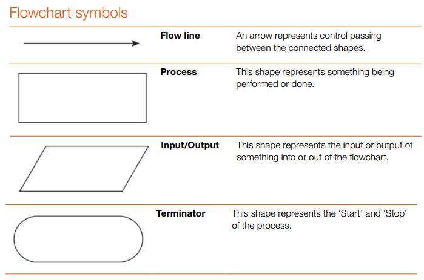

1. Introduction to basic data types: Integer, Real, Char, String, Boolean
The basic data types (the kind of data a variable can store) are Integer (whole number), Real (decimal number), Char (single character), String (sequence of characters), and Boolean (TRUE or FALSE).
Integer stores whole numbers such as 4 or −12. Literals have no decimal point.
Real stores decimal numbers such as 22.2 or 3.14.
Char stores exactly one character (in quotes), for example "A" or "9"; use String for two or more characters.
String stores text (in quotes), for example "red" or "Hello".
Boolean stores only TRUE or FALSE; write these in uppercase in this pseudocode.
Do not mix numbers stored as String with numeric calculations until converted; "22" is text, not a number.
Example: One clear assignment for each type.
Amount ← 100
Price ← 22.4
Letter ← "M"
Colour ← "red"
Finished ← TRUE
Basic data types
2. Declare and use variables and constants: use meaningful identifiers for Variables and Constants
A variable (named memory location) can change while the program runs; a constant is named data that must not change; both should use meaningful identifiers that describe their purpose.
An identifier is the name of a variable or constant; it should clearly reflect its role (for example, TotalPrice, NumberOfStudents).
Assignment stores a value in a variable using the left arrow ←; read this as "stores into".
In this pseudocode you do not need to type the arrow on your keyboard; it is a symbol that shows assignment.
Example: Declaring and assigning variables and a constant with descriptive names.
DECLARE FirstInteger : INTEGER
DECLARE TotalPrice : REAL
CONSTANT PI ← 3.142
StudentName ← "Alice"
NumberOfStudents ← 25
Additional variable and constant, as concise practice.
FavouriteColour ← "blue"
CONSTANT MaxScore ← 100
Variables and constants
3. Understand and use input and output
Input is the user entering data into the program; Output is the program displaying information to the user.
INPUT reads data into variables; OUTPUT shows text, numbers, or variable values.
Use a clear prompt before INPUT to tell the user what to enter.
Concatenation means joining pieces of text and values; in this pseudocode OUTPUT uses comma-separated parts.
Example: Ask for a name, store it, then output a personalized message.
OUTPUT "Please enter your name: "
INPUT UserName
OUTPUT "Hello ", UserName, ". Welcome."
User input and display output
4. Clearly apply maintainability concepts from the start, including: Appropriate use of meaningful identifiers and Appropriate use of comments in code
A maintainable program uses meaningful identifiers and comments so future readers can understand and safely modify the code.
Good identifiers make code self-documenting; write explanations as normal sentences around the code rather than inside the pseudocode lines.
Comments are preceded by two forward slashes: //. The comment continues until the end of the line. For
multi-line comments, each line is preceded by //.
Example: Meaningless vs meaningful names; plus a focused explanation of intent.
x ← 10
TotalScore ← 10
X ← 10
Y ← 20
Z ← X + Y
NumberOfStudents ← 10
NumberOfTeachers ← 20
// if admin will be considered we need to update the code
TotalPeople ← NumberOfStudents + NumberOfTeachers
OUTPUT "Total people: ", TotalPeople
Area ← Length * Width
Maintainability - naming and comments
5. Understand and use sequence (step-by-step instructions)
A sequence runs statements once each in the written order; changing the order changes the result.
Variables must be created and assigned values before they are used in calculations or output.
Order matters means that swapping two lines can give a different result.
Example: Summing two test scores and then showing the result.
TestScore1 ← 85
TestScore2 ← 92
TotalScore ← TestScore1 + TestScore2
OUTPUT "Your total score is ", TotalScore
Example: A greeting that depends on the order of inputs.
OUTPUT "Enter a colour"
INPUT Colour
OUTPUT "Enter your name"
INPUT Name
OUTPUT Name, " your favourite colour is ", Colour
Sequence (step-by-step)
6. Understand Flowchart symbols related to start, stop, input, output and process
A flowchart is a diagram that uses standard symbols to represent the steps of an algorithm (step-by-step solution).
Terminator ovals mark START and STOP.
Process rectangles show actions such as calculations or assignments.
Input/Output parallelograms represent reading data or displaying information.
Flow lines (arrows) show execution direction, typically top to bottom.

Example: A simple linear flow using standard symbols.
START (oval) → INPUT Number (parallelogram) → Result ← Number * 2 (rectangle) → OUTPUT Result (parallelogram) → STOP (oval)
Arithmetic operators perform calculations: + add, - subtract, * multiply, / divide, and ^ raise to a power; parentheses control evaluation order.
+ adds two values.
− subtracts the second value from the first.
* multiplies two values.
/ divides the first number by the second; use DIV if you need the whole number part only.
^ is the power operator in this pseudocode; it raises the first number to the power of the second.
Example: Rectangle area and perimeter using + and *.
Length ← 8
Width ← 5
Area ← Length * Width
Perimeter ← (Length + Width) * 2
OUTPUT "Area is ", Area
OUTPUT "Perimeter is ", Perimeter
Example: Circle area using ^ to square the radius.
Radius ← 4
PI ← 3.142
Area ← PI * Radius ^ 2
OUTPUT "Circle area is ", Area
Arithmetic operators
8. Use arithmetic-related library routines: MOD, DIV, ROUND, RANDOM
Library routines perform common operations: DIV returns the whole-number result of division, MOD returns the remainder, ROUND(number, places) rounds to a chosen number of decimal places, and RANDOM(low, high) generates a number in a given range.
Using DIV and MOD together shows quotient vs remainder for the same division.
ROUND takes two parameters: the value and the number of decimal places.
Example: DIV and MOD for operands 17 and 5.
WholeResult ← DIV(17, 5)
Remainder ← MOD(17, 5)
OUTPUT "17 divided by 5 is ", WholeResult, " remainder ", Remainder
Example: DIV and MOD for operands 11 and 3.
Q ← DIV(11, 3)
R ← MOD(11, 3)
OUTPUT "11 divided by 3 is ", Q, " remainder ", R
Example: Rounding a calculated price.
Price ← 19.99
TaxRate ← 0.075
TotalPrice ← Price * (1 + TaxRate)
RoundedPrice ← ROUND(TotalPrice, 2)
OUTPUT "Total price is ", RoundedPrice
Example: Generating a random number in a game range.
Relational operators compare values and return a Boolean result (TRUE or FALSE): = equal, < less than, > greater than, <= less than or equal, >= greater than or equal, <> not equal.
These comparisons are expressions that evaluate to TRUE or FALSE; later you will use them inside full statements.
Example: Evaluated comparisons.
10 <= 10
11 <= 10
10 > 11
11 > 10
10 <> 2
Comparison operators
10. Use logical operators: AND, OR, NOT
A Boolean operator combines or negates relational comparisons to produce a single TRUE or FALSE value: AND is TRUE only when both parts are TRUE; OR is TRUE when at least one part is TRUE; NOT reverses a Boolean value.
These are also expressions that produce TRUE or FALSE; you will later place them inside full statements.
Example: Pure logical evaluations without control structures.